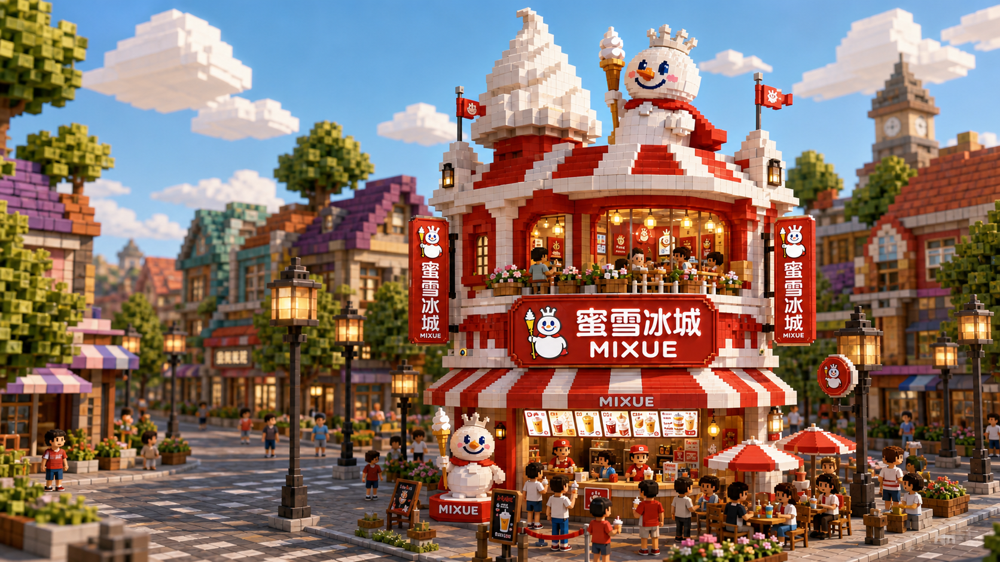
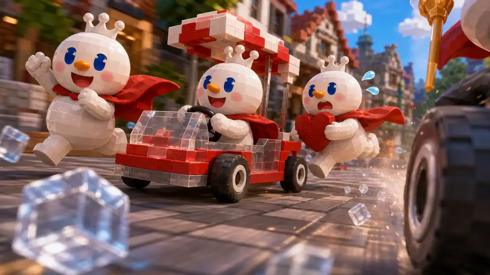
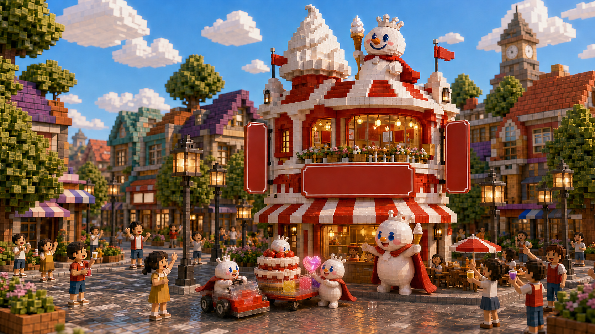

想清醒一下
冰鲜柠檬水
鲜亮、清爽、直接。适合刚跑完一段路，也适合把复杂的一天先还原成清亮的一口。

往下看今日甜蜜地图
把鼠标停在一杯上，先听听它会怎样回应今天的你。
鲜亮、清爽、直接。适合刚跑完一段路，也适合把复杂的一天先还原成清亮的一口。
葡萄果香慢慢铺开，软糯芋圆让一杯饮料有了停顿。适合结束很长的一天，不急着马上赶路。
草莓风味和晶莹波波一起，把平常的一天调成更轻快的粉红色。适合分享，也适合奖励自己。
开店前 · 07:57
我们不从“今天卖什么”开始，而从“今天谁需要一杯什么”开始。有人刚跑完一段路，想要一口清爽；有人结束了很长的一天，想慢慢嚼点甜；还有人只写了一句：今天值得草莓味。
产品不是故事的主角。替一个人接下今天的订单。
已选中：刚跑完八百米的订单

一杯饮料怎样成立
调整三种感觉，看看你的选择最终会指向哪一杯真实饮品。
 01
01适合你的，是
“把复杂的一天，先还原成清亮的一口。”把这一杯送回小店 →

订单完成
不是一句循环播放的歌。
是有人记得，你今天想喝什么。